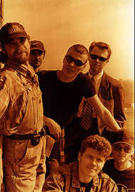

BIG BLUES REVIVAL собралась в феврале 1999. Объединяет музыкантов самобытных, тонко чувствующих настроение музыки и имеющих большую музыкальную практику.B.B.R. исповедует акустическое слышание и звучание музыки. Наше кредо - исполнение классических композиций BLUES, FUNK, SOUL сквозь свое видение этого мира, пестрого и многоцветного.
Группа B.B.R. впервые выступила в баре гостиницы "Карелия", оставив неизгладимый след в сердцах завсегдатаев этого заведения и вызвав множество различных дружественных жестов со стороны оных. B.B.R.- это BIG BLUES REVIVAL в полном смысле этого слова. B.B.R. занимается возрождением и развитием блюз-традиций в Санкт-Петербурге и во всем мире. Входя в XXI век, который будет веком блюза, B.B.R. выступают за мир во всем мире, в защиту прав человека и за специальные и обширные привилегии для блюзменов, как например бесплатная заправка на лучших бензоколонках и бесплатная стоянка на лучших автостоянках. В конце можно прибавить пару строк о том, что музыканты B.B.R. очень любят blues и каждый день в принципе им и занимаются - при всем этом рассчитывая на благосклонную реакцию публики, обильные вливания со стороны толстых кошельков, но в первую очередь на Господа нашего Иисуса Христа.
Официальный сайт группы с подробной информацией.
Bring It On Home (3 005k) (S.B.Williamson II)
I Can't Be Satisfied (2 840k) (M.Morganfield)
Louisiana Blues (718k) (M.Morganfield)